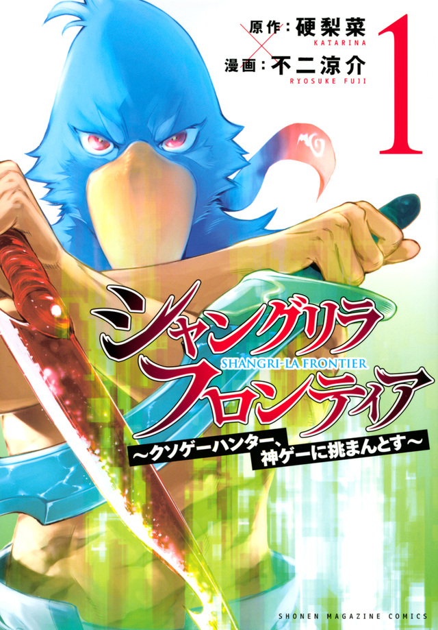

シャングリラ・フロンティア
著者：硬梨菜
漫画作画：不二涼介
あらすじ：フルダイブ型VRゲームが主流となった近未来。
向上した映像技術にシステム面が追い付いていない、いわゆる「クソゲー」と呼ばれるゲームが数多くリリースされていた。
そんな通常ならば忌み嫌われるクソゲーをこよなく愛するクソゲーハンター・陽務楽郎は、特大のクソゲー『フェアリア・クロニクル・オンライン』、
通称「フェアクソ」をクリアし、一種の燃え尽き症候群になっていた。
そんな中、行きつけのゲームショップ「ROCKROLL」の店主に勧められるがまま、クソゲーの対極に位置し「神ゲー」と評されている、
登録者数3000万人のフルダイブVRゲーム『シャングリラ・フロンティア』（シャンフロ）を購入。
プレイヤーキャラクター・サンラクとしてシャンフロの世界に足を踏み入れる。
(Wikipediaより)
